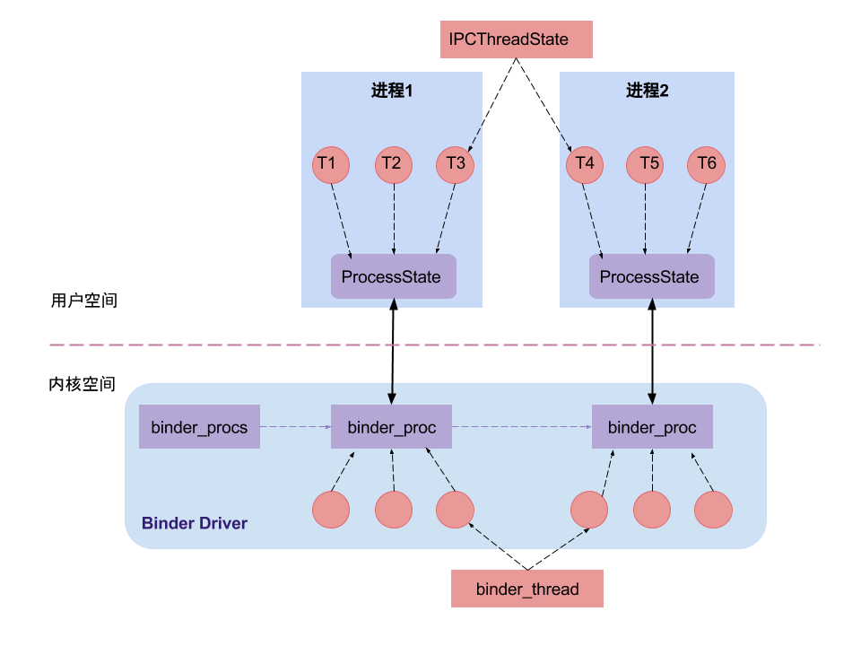

概述
从IPC角度来说：Binder是Android中的一种跨进程通信方式，该通信方式在linux中没有，是Android独有；
从Android Driver层：Binder还可以理解为一种虚拟的物理设备，它的设备驱动是/dev/binder；
从Android Native层：Binder是创建Service Manager以及BpBinder/BBinder模型，搭建与binder驱动的桥梁；
从Android Framework层：Binder是各种Manager（ActivityManager、WindowManager等）和相应xxxManagerService的桥梁；
从Android APP层：Binder是客户端和服务端进行通信的媒介，当bindService的时候，服务端会返回一个包含了服务端业务调用的Binder对象，通过这个Binder对象，客户端就可以获取服务端提供的服务或者数据。
Binder的优势 Android为什么要采用Binder作为IPC方式：
性能：Binder数据拷贝只需要一次，而管道、消息队列、Socket都需要2次，但共享内存方式一次内存拷贝都不需要；从性能角度看，Binder性能仅次于共享内存。
稳定性：Binder基于C/S架构，Client端有什么需求，直接发送给Server端去完成，架构清晰明朗，Server端与Client端相对独立，稳定性较好。
语言：Linux基于C语言(面向过程的语言)，而Android基于Java语言(面向对象的语句)，Binder符合面向对象的思想，将进程间通信转化为通过对某个Binder对象的引用调用该对象的方法，而其独特之处在于Binder对象是一个可以跨进程引用的对象，它的实体位于一个进程中，而它的引用却遍布于系统的各个进程之中。可以从一个进程传给其它进程，让大家都能访问同一Server，就像将一个对象或引用赋值给另一个引用一样。
安全：传统Linux IPC的接收方无法获得对方进程可靠的UID/PID，从而无法鉴别对方身份；Android系统中对外只暴露Client端，Client端将任务发送给Server端，Server端会根据权限控制策略，判断UID/PID是否满足访问权限。
协议：Linux内核所开放源代码受许可协议GPL保护，该协议具有“病毒式感染”的能力，受GPL保护的Linux Kernel是运行在内核空间，对于上层的任何类库、服务、应用等运行在用户空间，一旦进行SysCall（系统调用），调用到底层Kernel，那么也必须遵循GPL协议。Google巧妙地将GPL协议控制在内核空间，将用户空间的协议采用Apache-2.0协议（允许基于Android的开发商不向社区反馈源码），同时在GPL协议与Apache-2.0之间的Lib库中采用BSD证授权方法，有效隔断了GPL的传染性。
每种Linux的IPC机制都有存在的价值，同时在Android系统中也依然采用了大量Linux现有的IPC机制，根据每类IPC的原理特性，因时制宜，不同场景特性往往会采用其下最适宜的。比如在Android OS中的Zygote进程的IPC采用的是Socket（套接字）机制，Android中的Kill Process采用的signal（信号）机制等等。而Binder更多则用在system_server进程与上层App层的IPC交互。
Binder进程与线程 
对于底层Binder驱动，通过binder_procs链表记录所有创建的binder_proc结构体，binder驱动层的每一个binder_proc结构体都与用户空间的一个用于binder通信的进程一一对应，且每个进程有且只有一个ProcessState对象，这是通过单例模式来保证的。在每个进程中可以有很多个线程，每个线程对应一个IPCThreadState对象，IPCThreadState对象也是单例模式，即一个线程对应一个IPCThreadState对象，在Binder驱动层也有与之相对应的结构，那就是Binder_thread结构体。在binder_proc结构体中通过成员变量rb_root threads，来记录当前进程内所有的binder_thread。
Binder线程池：每个Server进程在启动时会创建一个binder线程池，并向其中注册一个Binder线程；之后Server进程也可以向binder线程池注册新的线程，或者Binder驱动在探测到没有空闲binder线程时会主动向Server进程注册新的的binder线程。对于一个Server进程有一个最大Binder线程数限制，默认为16个binder线程，例如Android的system_server进程就存在16个线程。对于所有Client端进程的binder请求都是交由Server端进程的binder线程来处理的。
Binder的路由原理 BpBinder发送端，根据handler，在当前binder_proc中，找到相应的binder_ref，由binder_ref再找到目标binder_node实体，由目标binder_node再找到目标进程binder_proc。简单的方式是直接把binder_transaction节点插入到binder_proc的todo队列中，完成传输过程。
Binder服务调用原理 AIDL 从AIDL开始：
1 2 3 4 5 6 7 8 package com.hearing.myaidl;import android.os.IBinder;interface IMyAidl IBinder getBinder (int i) ; }
生成的IMyAidl接口如下：
1 2 3 public interface IMyAidl extends android .os .IInterface public android.os.IBinder getBinder (int i) throws android.os.RemoteException ; }
生成的Stub类如下：
1 2 3 4 5 6 7 8 9 10 11 12 13 14 15 16 17 18 19 20 21 22 23 24 25 26 27 28 29 30 31 32 33 34 35 36 37 38 39 40 41 42 43 44 45 46 47 48 49 50 51 52 53 54 55 56 public static abstract class Stub extends android .os .Binder implements com .hearing .myaidl .IMyAidl private static final java.lang.String DESCRIPTOR = "com.hearing.myaidl.IMyAidl" ; public Stub () this .attachInterface(this , DESCRIPTOR); } public static com.hearing.myaidl.IMyAidl asInterface (android.os.IBinder obj) { if ((obj == null )) { return null ; } android.os.IInterface iin = obj.queryLocalInterface(DESCRIPTOR); if (((iin != null ) && (iin instanceof com.hearing.myaidl.IMyAidl))) { return ((com.hearing.myaidl.IMyAidl) iin); } return new com.hearing.myaidl.IMyAidl.Stub.Proxy(obj); } @Override public android.os.IBinder asBinder () { return this ; } @Override public boolean onTransact (int code, android.os.Parcel data, android.os.Parcel reply, int flags) throws android.os.RemoteException java.lang.String descriptor = DESCRIPTOR; switch (code) { case INTERFACE_TRANSACTION: { reply.writeString(descriptor); return true ; } case TRANSACTION_getBinder: { data.enforceInterface(descriptor); int _arg0; _arg0 = data.readInt(); android.os.IBinder _result = this .getBinder(_arg0); reply.writeNoException(); reply.writeStrongBinder(_result); return true ; } default : { return super .onTransact(code, data, reply, flags); } } } static final int TRANSACTION_getBinder = (android.os.IBinder.FIRST_CALL_TRANSACTION + 0 ); }
生成的Proxy类如下：
1 2 3 4 5 6 7 8 9 10 11 12 13 14 15 16 17 18 19 20 21 22 23 24 25 26 27 28 29 30 31 32 33 34 35 36 37 private static class Proxy implements com .hearing .myaidl .IMyAidl private android.os.IBinder mRemote; Proxy(android.os.IBinder remote) { mRemote = remote; } @Override public android.os.IBinder asBinder () { return mRemote; } public java.lang.String getInterfaceDescriptor () { return DESCRIPTOR; } @Override public android.os.IBinder getBinder (int i) throws android.os.RemoteException { android.os.Parcel _data = android.os.Parcel.obtain(); android.os.Parcel _reply = android.os.Parcel.obtain(); android.os.IBinder _result; try { _data.writeInterfaceToken(DESCRIPTOR); _data.writeInt(i); boolean _status = mRemote.transact(Stub.TRANSACTION_getBinder, _data, _reply, 0 ); if (!_status && getDefaultImpl() != null ) { return getDefaultImpl().getBinder(i); } _reply.readException(); _result = _reply.readStrongBinder(); } finally { _reply.recycle(); _data.recycle(); } return _result; } }
BinderProxy.transact 当客户端与服务端不在同一个进程里时，客户端的onServiceConnected返回的第二个参数IBinder为BinderProxy类型，则IMyAidl.Stub.asInterface返回的是Proxy对象，其mRemote成员变量为BinderProxy实例。当客户端调用getBinder方法时，调用的是Proxy.getBinder方法，其mRemote.transact调用的是BinderProxy.transact方法，该方法的源码在之前已经解析过了，主要看看服务端Binder线程中的IPCThreadState::executeCommand方法，这里根据BR_TRANSACTION返回码调用了服务端的BBinder::transact方法。
1 2 3 4 5 6 7 8 9 10 11 12 13 14 15 16 17 18 19 20 21 22 23 24 25 26 status_t IPCThreadState::executeCommand (int32_t cmd) BBinder* obj; RefBase::weakref_type* refs; status_t result = NO_ERROR; switch ((uint32_t )cmd) { case BR_TRANSACTION: { binder_transaction_data tr; result = mIn.read(&tr, sizeof (tr)); if (tr.target.ptr) { if (reinterpret_cast <RefBase::weakref_type*>(tr.target.ptr)->attemptIncStrong(this )) { error = reinterpret_cast <BBinder*>(tr.cookie)->transact(tr.code, buffer, &reply, tr.flags); reinterpret_cast <BBinder*>(tr.cookie)->decStrong(this ); } else { error = UNKNOWN_TRANSACTION; } } else { error = the_context_object->transact(tr.code, buffer, &reply, tr.flags); } } break ; } }
BBinder.transact 1 2 3 4 5 6 7 8 9 10 11 12 13 14 15 16 17 18 19 20 21 status_t BBinder::transact ( uint32_t code, const Parcel& data, Parcel* reply, uint32_t flags) data.setDataPosition(0 ); status_t err = NO_ERROR; switch (code) { case PING_TRANSACTION: reply->writeInt32(pingBinder()); break ; default : err = onTransact(code, data, reply, flags); break ; } if (reply != NULL ) { reply->setDataPosition(0 ); } return err; }
这里会执行到JavaBBinder.onTransact方法。
JavaBBinder.onTransact 1 2 3 4 5 6 7 8 9 10 11 12 13 14 15 16 17 18 19 20 21 22 23 24 25 26 27 28 const char * const kBinderPathName = "android/os/Binder" ;static int int_register_android_os_Binder (JNIEnv* env) jclass clazz = FindClassOrDie(env, kBinderPathName); gBinderOffsets.mClass = MakeGlobalRefOrDie(env, clazz); gBinderOffsets.mExecTransact = GetMethodIDOrDie(env, clazz, "execTransact" , "(IJJI)Z" ); gBinderOffsets.mObject = GetFieldIDOrDie(env, clazz, "mObject" , "J" ); return RegisterMethodsOrDie( env, kBinderPathName, gBinderMethods, NELEM(gBinderMethods)); } virtual status_t onTransact ( uint32_t code, const Parcel& data, Parcel* reply, uint32_t flags = 0 ) JNIEnv* env = javavm_to_jnienv(mVM); IPCThreadState* thread_state = IPCThreadState::self(); const int32_t strict_policy_before = thread_state->getStrictModePolicy(); jboolean res = env->CallBooleanMethod(mObject, gBinderOffsets.mExecTransact, code, reinterpret_cast <jlong>(&data), reinterpret_cast <jlong>(reply), flags); return res != JNI_FALSE ? NO_ERROR : UNKNOWN_TRANSACTION; }
Binder.execTransact 1 2 3 4 5 6 7 8 9 10 11 12 13 14 private boolean execTransact (int code, long dataObj, long replyObj, int flags) Parcel data = Parcel.obtain(dataObj); Parcel reply = Parcel.obtain(replyObj); boolean res; try { res = onTransact(code, data, reply, flags); } catch (RemoteException|RuntimeException e) { } reply.recycle(); data.recycle(); return res; }
然后会调用到我们自定义的onTransact方法，其中reply.writeStrongBinder(_result)方法中，会通过flatten_binder函数将obj.hdr.type置为BINDER_TYPE_HANDLE。接着服务端进程会向Binder驱动发送BC_REPLY命令，Binder驱动执行binder_transaction方法，由于hdr->type等于BINDER_TYPE_HANDLE，因此驱动会执行binder_translate_handle方法。这里分两种情况：
当请求服务的进程与服务属于不同进程，则为请求服务所在进程创建binder_ref对象，指向服务进程中的binder_node；
当请求服务的进程与服务属于同一进程，则不再创建新对象，只是引用计数加1，并且修改type为BINDER_TYPE_BINDER或BINDER_TYPE_WEAK_BINDER。
这里是创建了一个binder_ref对象返回给客户端，客户端通过_result = _reply.readStrongBinder()返回一个BinderProxy对象。
实例一：同进程 服务端：
1 2 3 4 5 6 7 8 9 10 11 12 13 14 15 16 17 18 19 20 21 public class Service1 extends Service private Binder binder = new Binder1(); @Override public void onCreate () super .onCreate(); } @Override public IBinder onBind (Intent intent) return binder; } class Binder1 extends Binder public void binder () Log.d("LLL" , "binder" ); } } }
客户端：
1 2 3 4 5 6 7 8 9 10 11 12 13 public void btn1 (View view) bindService(new Intent(this , Service1.class), new ServiceConnection() { @Override public void onServiceConnected (ComponentName name, IBinder service) ((Service1.Binder1) service).binder(); } @Override public void onServiceDisconnected (ComponentName name) } }, Context.BIND_AUTO_CREATE); }
实例二：跨进程 服务端：
1 2 3 4 5 6 7 8 9 10 11 12 13 14 15 16 17 18 19 20 21 22 23 24 25 26 public class BinderService extends Service private Binder binder = new Binder() { @Override protected boolean onTransact (int code, @NonNull Parcel data, @Nullable Parcel reply, int flags) throws RemoteException if (code == 1 ) { String name; name = data.readString(); if (reply == null ) { reply = Parcel.obtain(); } reply.writeString(name + "-" + name); return true ; } return super .onTransact(code, data, reply, flags); } }; @Nullable @Override public IBinder onBind (Intent intent) return binder; } }
客户端：
1 2 3 4 5 6 7 8 9 10 11 12 13 14 15 16 17 18 19 20 21 22 23 24 25 26 27 28 29 30 31 32 33 34 35 36 37 38 39 40 41 public class MainActivity extends AppCompatActivity private ServiceConnection serviceConnection = new ServiceConnection() { @Override public void onServiceConnected (ComponentName componentName, IBinder iBinder) Parcel data = Parcel.obtain(); data.writeString("hearing" ); Parcel reply = Parcel.obtain(); IBinder binder = iBinder; try { binder.transact(1 , data, reply, 0 ); Log.d("LLL" , "name = " + reply.readString()); } catch (RemoteException e) { data.recycle(); reply.recycle(); } } @Override public void onServiceDisconnected (ComponentName componentName) } }; @Override protected void onCreate (Bundle savedInstanceState) super .onCreate(savedInstanceState); setContentView(R.layout.activity_main); Intent intent = new Intent(this , BinderService.class); bindService(intent, serviceConnection, Context.BIND_AUTO_CREATE); } @Override protected void onDestroy () super .onDestroy(); unbindService(serviceConnection); } }
实例三：Nativie 根据Binder在Native层的原理解析，可以模仿已有Service注册和获取过程，添加自己定义的Service。不过由于SeLinux的限制，默认情况下我们没有权限去这样操作，需要修改配置重新编译系统。
服务端：
1 2 3 4 5 6 7 8 9 10 11 12 #include "IMyService.h" int main () sp<IServiceManager> sm = defaultServiceManager(); sm->addService(String16("hearing.service.myservice" ), new BnMyService()); ProcessState::self()->startThreadPool(); IPCThreadState::self()->joinThreadPool(); return 0 ; }
将名为hearing.service.myservice的BnMyService服务添加到ServiceManager，并启动服务。
客户端：
1 2 3 4 5 6 7 8 9 10 11 12 13 14 #include "IMyService.h" int main () sp<IServiceManager> sm = defaultServiceManager(); sp<IBinder> binder = sm->getService(String16("hearing.service.myservice" )); sp<IMyService> cs = interface_cast<IMyService>(binder); cs->hello(); return 0 ; }
获取名为hearing.service.myservice的服务，再进行类型转换，最后调用远程方法hello()。
创建服务：
1 2 3 4 5 6 7 8 9 10 11 12 13 14 15 16 17 18 19 20 21 22 23 24 25 26 27 28 29 30 31 32 33 34 35 36 37 38 39 40 41 42 43 44 45 46 47 48 49 50 51 52 53 54 55 56 57 58 59 60 61 62 63 64 65 66 67 68 69 70 71 72 73 74 75 76 namespace android{ class IMyService :public IInterface { public : DECLARE_META_INTERFACE(MyService); virtual void hello () 0 ; }; enum { HELLO = 1 , }; class BpMyService :public BpInterface<IMyService> { public : BpMyService(const sp<IBinder>& impl); virtual void hello () }; class BnMyService :public BnInterface<IMyService> { public : virtual status_t onTransact (uint32_t code, const Parcel& data, Parcel* reply, uint32_t flags = 0 ) virtual void hello () }; } #include "IMyService.h" namespace android{ IMPLEMENT_META_INTERFACE(MyService, "android.demo.IMyService" ); BpMyService::BpMyService(const sp<IBinder>& impl) : BpInterface<IMyService>(impl) { } void BpMyService::hello () printf ("BpMyService::hello\n" ); Parcel data, reply; data.writeInterfaceToken(IMyService::getInterfaceDescriptor()); remote()->transact(HELLO, data, &reply); printf ("get num from BnMyService: %d\n" , reply.readInt32()); } status_t BnMyService::onTransact (uint_t code, const Parcel& data, Parcel* reply, uint32_t flags) switch (code) { case HELLO: { printf ("BnMyService:: got the client hello\n" ); CHECK_INTERFACE(IMyService, data, reply); hello(); reply->writeInt32(2015 ); return NO_ERROR; } break ; default : break ; } return NO_ERROR; } void BnMyService::hello () printf ("BnMyService::hello\n" ); }; }
实例四：Framework 由于SeLinux的限制，默认情况下我们没有权限去这样操作，需要重新编译系统。
服务端：
1 2 3 4 5 6 7 8 9 10 11 12 13 14 15 16 17 18 19 20 21 22 23 24 25 26 27 28 29 30 31 32 33 34 35 36 37 38 39 40 41 42 43 44 45 46 47 48 49 50 51 52 53 54 55 56 57 58 59 60 61 62 63 64 65 66 67 68 69 70 public class ServerDemo public static void main (String[] args) System.out.println("MyService Start" ); Looper.prepareMainLooper(); Process.setThreadPriority(Process.THREAD_PRIORITY_FOREGROUND); ServiceManager.addService("MyService" , new MyService()); Looper.loop(); } } public interface IMyService extends IInterface static final java.lang.String DESCRIPTOR = "com.hearing.frameworkBinder.MyServer" ; public void hello (String str) throws RemoteException static final int TRANSACTION_SAY = IBinder.FIRST_CALL_TRANSACTION; } public class MyService extends Binder implements IMyService public MyService () this .attachInterface(this , DESCRIPTOR); } @Override public IBinder asBinder () return this ; } public static IMyService asInterface ( IBinder obj) if ((obj == null )) { return null ; } IInterface iInterface = obj.queryLocalInterface(DESCRIPTOR); if (((iInterface != null ) && (iInterface instanceof IMyService))){ return ((IMyService) iInterface); } return null ; } @Override protected boolean onTransact (int code, Parcel data, Parcel reply, int flags) throws RemoteException switch (code) { case INTERFACE_TRANSACTION: { reply.writeString(DESCRIPTOR); return true ; } case TRANSACTION_SAY: { data.enforceInterface(DESCRIPTOR); String str = data.readString(); hello(str); reply.writeNoException(); return true ; } } return super .onTransact(code, data, reply, flags); } @Override public void hello (String str) System.out.println("MyService:: Hello, " + str); } }
Client端：
1 2 3 4 5 6 7 8 9 10 11 12 13 14 15 16 17 18 19 20 21 22 23 24 25 26 27 28 29 30 31 32 33 34 35 36 37 38 39 40 41 42 43 44 45 public class ClientDemo public static void main (String[] args) throws RemoteException System.out.println("Client start" ); IBinder binder = ServiceManager.getService("MyService" ); IMyService myService = new MyServiceProxy(binder); myService.hello("binder" ); System.out.println("Client end" ); } } public class MyServiceProxy implements IMyService private IBinder mRemote; public MyServiceProxy (IBinder remote) mRemote = remote; } public java.lang.String getInterfaceDescriptor () { return DESCRIPTOR; } @Override public void hello (String str) throws RemoteException Parcel _data = Parcel.obtain(); Parcel _reply = Parcel.obtain(); try { _data.writeInterfaceToken(DESCRIPTOR); _data.writeString(str); mRemote.transact(TRANSACTION_SAY, _data, _reply, 0 ); _reply.readException(); } finally { _reply.recycle(); _data.recycle(); } } @Override public IBinder asBinder () return mRemote; } }
实例五：AIDL 概述 AIDL（Android接口定义语言）是Android提供的一种基于Binder的IPC机制，它是一种语言。AIDL支持的数据类型：
Java的基本数据类型以及String，CharSequence
List和Map
元素必须是AIDL支持的数据类型
Server端具体的类里则必须是ArrayList或者HashMap
其他AIDL生成的接口
实现Parcelable的实体
AIDL文件可以分为两类：
一类用来声明实现了Parcelable接口的数据类型，以供其他AIDL文件使用
一类用来定义接口方法，声明要暴露哪些接口给客户端调用。除了基本数据类型，其它类型的参数都需要使用定向Tag用来标注(in, out, inout)，且需要导包。
定向Tag表示在跨进程通信中数据的流向，用于标注方法的参数值，分为in、out、inout三种。其中in表示数据只能由客户端流向服务端，out表示数据只能由服务端流向客户端，而inout则表示数据可在服务端与客户端之间双向流通。此外，如果AIDL方法接口的参数值类型是：基本数据类型、String、CharSequence或者其他AIDL文件定义的方法接口，那么这些参数值的定向Tag默认是且只能是in，所以除了这些类型外，其他参数值都需要明确标注使用哪种定向Tag。
在AIDL文件中需要明确标明引用到的数据类型所在的包名，即使两个文件处在同个包名下。
oneway：通常Client调用AIDL接口方法时会阻塞，直到Server进程中该方法被执行完。oneway可以修饰AIDL文件里的接口和方法，oneway类型的方法在客户端请求远程接口时不需要等待响应可直接调用返回，但是返回值会无效。如果client和Server在同一进程中，oneway修饰的方法还是会阻塞。
创建 AIDL 1. 序列化类(com.hearing.myaidl.bean)：
1 2 3 4 5 6 7 8 9 10 11 12 13 14 15 16 17 18 19 20 21 22 23 24 25 26 27 28 29 30 31 32 33 34 35 36 37 38 39 public class Person implements Parcelable private String mName; public Person (String name) mName = name; } protected Person (Parcel in) mName = in.readString(); } public static final Creator<Person> CREATOR = new Creator<Person>() { @Override public Person createFromParcel (Parcel in) return new Person(in); } @Override public Person[] newArray(int size) { return new Person[size]; } }; @Override public int describeContents () return 0 ; } @Override public void writeToParcel (Parcel dest, int flags) dest.writeString(mName); } @NonNull @Override public String toString () return super .toString() + ": name = " + mName; } }
2. AIDL文件：
1 2 3 4 5 6 7 8 9 10 11 12 13 14 package com.hearing.myaidl.bean;parcelable Person; package com.hearing.myaidl;import com.hearing.myaidl.bean.Person;interface IMyAidl void addPerson (in Person person) List<Person> getPersonList () ; }
3. make project
服务端 将其注册到子进程中。
1 2 3 4 5 6 7 8 9 10 11 12 13 14 15 16 17 18 19 20 21 22 23 24 25 26 public class RemoteService extends Service private List<Person> mPeople; private IBinder mBinder = new IMyAidl.Stub() { @Override public void addPerson (Person person) throws RemoteException if (mPeople == null ) { mPeople = new ArrayList<>(); } if (person != null ) { mPeople.add(person); } } @Override public List<Person> getPersonList () throws RemoteException return mPeople; } }; @Nullable @Override public IBinder onBind (Intent intent) return mBinder; } }
客户端 1 2 3 4 5 6 7 8 9 10 11 12 13 14 15 16 17 18 19 20 21 22 23 24 25 26 27 28 29 30 31 32 33 34 35 36 37 public class MainActivity extends AppCompatActivity private static final String TAG = "Binder" ; private IMyAidl mMyAidl; private ServiceConnection mConnection = new ServiceConnection() { @Override public void onServiceConnected (ComponentName name, IBinder service) Log.d(TAG, "name = " + name + ", service = " + service); try { mMyAidl = IMyAidl.Stub.asInterface(service); mMyAidl.addPerson(new Person("person-1" )); mMyAidl.addPerson(new Person("person-2" )); Log.d(TAG, "list = " + mMyAidl.getPersonList()); } catch (Exception ignored) { } } @Override public void onServiceDisconnected (ComponentName name) } }; @Override protected void onCreate (Bundle savedInstanceState) super .onCreate(savedInstanceState); setContentView(R.layout.activity_main); bindService(new Intent(this , RemoteService.class), mConnection, Context.BIND_AUTO_CREATE); } @Override protected void onDestroy () unbindService(mConnection); super .onDestroy(); } }
IMyAidl.java 1 2 3 4 5 6 7 8 9 10 11 12 13 14 15 16 17 18 19 20 21 22 23 24 25 26 27 28 29 30 31 32 33 34 35 36 37 38 39 40 41 42 43 44 45 46 47 48 49 50 51 52 53 54 55 56 57 58 59 60 61 62 63 64 65 66 67 68 69 70 71 72 73 74 75 76 77 78 79 80 81 82 83 84 85 86 87 88 89 90 91 92 93 94 95 96 97 98 99 100 101 102 103 104 105 106 107 108 109 110 111 112 113 114 115 116 117 118 119 120 121 122 123 124 125 126 127 128 129 130 131 132 133 134 135 136 137 138 139 140 141 142 143 144 145 146 147 148 149 150 151 152 153 154 155 156 157 158 159 160 161 162 163 164 165 166 167 168 169 public interface IMyAidl extends android .os .IInterface public static class Default implements com .hearing .myaidl .IMyAidl @Override public void addPerson (com.hearing.myaidl.bean.Person person) throws android.os.RemoteException } @Override public java.util.List<com.hearing.myaidl.bean.Person> getPersonList() throws android.os.RemoteException { return null ; } @Override public android.os.IBinder asBinder () { return null ; } } public static abstract class Stub extends android .os .Binder implements com .hearing .myaidl .IMyAidl private static final java.lang.String DESCRIPTOR = "com.hearing.myaidl.IMyAidl" ; public Stub () this .attachInterface(this , DESCRIPTOR); } public static com.hearing.myaidl.IMyAidl asInterface (android.os.IBinder obj) { if ((obj == null )) { return null ; } android.os.IInterface iin = obj.queryLocalInterface(DESCRIPTOR); if (((iin != null ) && (iin instanceof com.hearing.myaidl.IMyAidl))) { return ((com.hearing.myaidl.IMyAidl) iin); } return new com.hearing.myaidl.IMyAidl.Stub.Proxy(obj); } @Override public android.os.IBinder asBinder () { return this ; } @Override public boolean onTransact (int code, android.os.Parcel data, android.os.Parcel reply, int flags) throws android.os.RemoteException java.lang.String descriptor = DESCRIPTOR; switch (code) { case INTERFACE_TRANSACTION: { reply.writeString(descriptor); return true ; } case TRANSACTION_addPerson: { data.enforceInterface(descriptor); com.hearing.myaidl.bean.Person _arg0; if ((0 != data.readInt())) { _arg0 = com.hearing.myaidl.bean.Person.CREATOR.createFromParcel(data); } else { _arg0 = null ; } this .addPerson(_arg0); reply.writeNoException(); return true ; } case TRANSACTION_getPersonList: { data.enforceInterface(descriptor); java.util.List<com.hearing.myaidl.bean.Person> _result = this .getPersonList(); reply.writeNoException(); reply.writeTypedList(_result); return true ; } default : { return super .onTransact(code, data, reply, flags); } } } private static class Proxy implements com .hearing .myaidl .IMyAidl private android.os.IBinder mRemote; Proxy(android.os.IBinder remote) { mRemote = remote; } @Override public android.os.IBinder asBinder () { return mRemote; } public java.lang.String getInterfaceDescriptor () { return DESCRIPTOR; } @Override public void addPerson (com.hearing.myaidl.bean.Person person) throws android.os.RemoteException android.os.Parcel _data = android.os.Parcel.obtain(); android.os.Parcel _reply = android.os.Parcel.obtain(); try { _data.writeInterfaceToken(DESCRIPTOR); if ((person != null )) { _data.writeInt(1 ); person.writeToParcel(_data, 0 ); } else { _data.writeInt(0 ); } boolean _status = mRemote.transact(Stub.TRANSACTION_addPerson, _data, _reply, 0 ); if (!_status && getDefaultImpl() != null ) { getDefaultImpl().addPerson(person); return ; } _reply.readException(); } finally { _reply.recycle(); _data.recycle(); } } @Override public java.util.List<com.hearing.myaidl.bean.Person> getPersonList() throws android.os.RemoteException { android.os.Parcel _data = android.os.Parcel.obtain(); android.os.Parcel _reply = android.os.Parcel.obtain(); java.util.List<com.hearing.myaidl.bean.Person> _result; try { _data.writeInterfaceToken(DESCRIPTOR); boolean _status = mRemote.transact(Stub.TRANSACTION_getPersonList, _data, _reply, 0 ); if (!_status && getDefaultImpl() != null ) { return getDefaultImpl().getPersonList(); } _reply.readException(); _result = _reply.createTypedArrayList(com.hearing.myaidl.bean.Person.CREATOR); } finally { _reply.recycle(); _data.recycle(); } return _result; } public static com.hearing.myaidl.IMyAidl sDefaultImpl; } static final int TRANSACTION_addPerson = (android.os.IBinder.FIRST_CALL_TRANSACTION + 0 ); static final int TRANSACTION_getPersonList = (android.os.IBinder.FIRST_CALL_TRANSACTION + 1 ); public static boolean setDefaultImpl (com.hearing.myaidl.IMyAidl impl) if (Stub.Proxy.sDefaultImpl == null && impl != null ) { Stub.Proxy.sDefaultImpl = impl; return true ; } return false ; } public static com.hearing.myaidl.IMyAidl getDefaultImpl () { return Stub.Proxy.sDefaultImpl; } } public void addPerson (com.hearing.myaidl.bean.Person person) throws android.os.RemoteException public java.util.List<com.hearing.myaidl.bean.Person> getPersonList() throws android.os.RemoteException; }
实例六：RemoteCallbackList 在 AIDL 通信中多个客户端连接了同一个服务端，如果服务端有变化时需要通知客户端，可以使用 RemoteCallbackList 来维护一个回调列表。
AIDL：
1 2 3 4 5 6 7 8 9 10 11 12 13 14 15 16 17 // IAIDLCallback.aidl - 回调接口 package com.hearing.mvvm; interface IAIDLCallback { void notify(String msg); } // ----------------------------------------------- // // IAIDLInterface.aidl - 服务端接口 package com.hearing.mvvm; import com.hearing.mvvm.IAIDLCallback; interface IAIDLInterface { void register(IAIDLCallback callback); void unregister(IAIDLCallback callback); }
服务端：
1 2 3 4 5 6 7 8 9 10 11 12 13 14 15 16 17 18 19 20 21 22 23 24 25 26 27 28 29 30 31 32 33 34 35 36 class RemoteService : Service private val remoteCallbackList = RemoteCallbackList<IAIDLCallback>() private val binder = object : IAIDLInterface.Stub() { override fun register (callback: IAIDLCallback ?) Log.d("LLLL" , "RemoteService register: $callback " ) remoteCallbackList.register(callback) } override fun unregister (callback: IAIDLCallback ?) Log.d("LLLL" , "RemoteService unregister: $callback " ) remoteCallbackList.unregister(callback) } } override fun onBind (intent: Intent ?) thread { for (i in 0 ..20 ) { Thread.sleep(1000 ) handle("msg from remote: $i " ) } } return binder } private fun handle (message: String ) Log.v("LLLL" , "RemoteService handle: $message " ) try { for (i in 0 until remoteCallbackList.beginBroadcast()) { remoteCallbackList.getBroadcastItem(i).notify(message) } } catch (e: RemoteException) { e.printStackTrace() } remoteCallbackList.finishBroadcast() } }
客户端：
1 2 3 4 5 6 7 8 9 10 11 12 13 14 15 16 17 18 19 20 21 22 23 private var remoteInterface: IAIDLInterface? = null private val remoteCallback = object : IAIDLCallback.Stub() { override fun notify (msg: String ?) Log.d("LLLL" , "notify: $msg " ) } } bindService(Intent(this , RemoteService::class .java), object : ServiceConnection { override fun onServiceConnected (name: ComponentName ?, service: IBinder ?) try { remoteInterface = IAIDLInterface.Stub.asInterface(service) remoteInterface?.register(remoteCallback) } catch (e: Exception) { } } override fun onServiceDisconnected (name: ComponentName ?) try { remoteInterface?.unregister(remoteCallback) } catch (e: Exception) { } } }, Context.BIND_AUTO_CREATE)
原理：
RemoteCallbackList内部使用了ArrayMap：
1 ArrayMap<IBinder, Callback> mCallbacks = new ArrayMap<IBinder, Callback>();
register方法如下：
1 2 3 4 5 6 7 8 9 10 11 12 13 14 15 16 17 18 19 public boolean register (E callback, Object cookie) synchronized (mCallbacks) { if (mKilled) { return false ; } logExcessiveCallbacks(); IBinder binder = callback.asBinder(); try { Callback cb = new Callback(callback, cookie); binder.linkToDeath(cb, 0 ); mCallbacks.put(binder, cb); return true ; } catch (RemoteException e) { return false ; } } }
如需要接收死亡通知，进行服务端部分状态的切换，继承该RemoteCallbackList，复写onCallbackDied方法即可。
该类的源码如下：
1 2 3 4 5 6 7 8 9 10 11 12 13 14 15 16 17 18 19 20 21 22 23 24 25 26 27 28 29 30 31 32 33 34 35 36 37 38 39 40 41 42 43 44 45 46 47 48 49 50 51 52 53 54 55 56 57 58 59 60 61 62 63 64 65 66 67 68 69 70 71 72 73 74 75 76 77 78 79 80 81 82 83 84 85 86 87 88 89 90 91 92 93 94 95 96 97 98 99 100 101 102 103 104 105 106 107 108 109 110 111 112 113 114 115 116 117 118 119 public class RemoteCallbackList <E extends IInterface > ArrayMap<IBinder, Callback> mCallbacks = new ArrayMap<IBinder, Callback>(); private Object[] mActiveBroadcast; private int mBroadcastCount = -1 ; private boolean mKilled = false ; private StringBuilder mRecentCallers; private final class Callback implements IBinder .DeathRecipient final E mCallback; final Object mCookie; Callback(E callback, Object cookie) { mCallback = callback; mCookie = cookie; } @Override public void binderDied () synchronized (mCallbacks) { mCallbacks.remove(mCallback.asBinder()); } onCallbackDied(mCallback, mCookie); } } public boolean register (E callback) return register(callback, null ); } public boolean register (E callback, Object cookie) synchronized (mCallbacks) { if (mKilled) { return false ; } IBinder binder = callback.asBinder(); try { Callback cb = new Callback(callback, cookie); binder.linkToDeath(cb, 0 ); mCallbacks.put(binder, cb); return true ; } catch (RemoteException e) { return false ; } } } public boolean unregister (E callback) synchronized (mCallbacks) { Callback cb = mCallbacks.remove(callback.asBinder()); if (cb != null ) { cb.mCallback.asBinder().unlinkToDeath(cb, 0 ); return true ; } return false ; } } public void kill () synchronized (mCallbacks) { for (int cbi=mCallbacks.size()-1 ; cbi>=0 ; cbi--) { Callback cb = mCallbacks.valueAt(cbi); cb.mCallback.asBinder().unlinkToDeath(cb, 0 ); } mCallbacks.clear(); mKilled = true ; } } public void onCallbackDied (E callback) } public void onCallbackDied (E callback, Object cookie) onCallbackDied(callback); } public int beginBroadcast () synchronized (mCallbacks) { if (mBroadcastCount > 0 ) { throw new IllegalStateException("beginBroadcast() called while already in a broadcast" ); } final int N = mBroadcastCount = mCallbacks.size(); if (N <= 0 ) { return 0 ; } Object[] active = mActiveBroadcast; if (active == null || active.length < N) { mActiveBroadcast = active = new Object[N]; } for (int i=0 ; i<N; i++) { active[i] = mCallbacks.valueAt(i); } return N; } } public E getBroadcastItem (int index) return ((Callback)mActiveBroadcast[index]).mCallback; } public void finishBroadcast () synchronized (mCallbacks) { if (mBroadcastCount < 0 ) { throw new IllegalStateException("finishBroadcast() called outside of a broadcast" ); } Object[] active = mActiveBroadcast; if (active != null ) { final int N = mBroadcastCount; for (int i=0 ; i<N; i++) { active[i] = null ; } } mBroadcastCount = -1 ; } } }